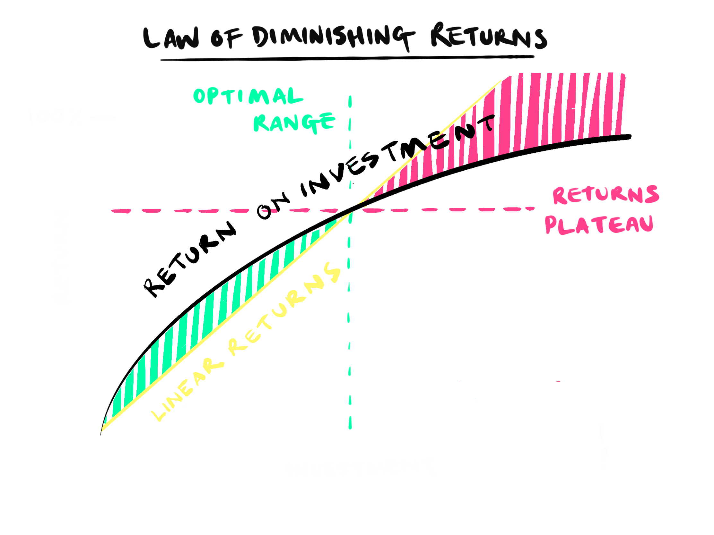

Ever noticed that the first slice of pizza is always the best and each slice afterwards never quite matches up?
Welcome to the Law of Diminishing Returns, a principle from economics which holds that as investment increases, returns diminish relative to the investment• Tap the graph below to see various diminishing return scenarios.•

The black line represents return-on-investment. The linear growth line shows what it'd look like if returns equaled investment (costs). As you can see the returns begin well, returning more than the cost but at a point they fall below costs•
When it comes to Happiness and Wealth, we can take our friend Mr• F• Cat, he's the one who's full of pizza. Fat Cat loves cars, and gets immense joy from furnishing his garage with gleaming supercars like a feline Jay Leno••• to begin with, but at a certain point each shiny new automobile adds less joy than the last• He ponders to himself, how can I make more joy? Then he spots Mr• A• Cat and has an idea•

Now, this act of generosity does little to dent Fat Cat's happiness (remember, diminishing returns), but for Alley Cat, who has never owned anything more than a box, this gift is a game-changer• It's a total positive-sum game!•
Added-Joy = (Life-changing joy from the car to Alley Cat) - (Diminished joy from the car for Fat Cat)•
And here's the kicker - this act doesn't just make Alley Cat happier, because happiness is itself non-zero-sum, it's contagious - making someone else happier, makes you happier too*•
What's the lesson in this tale of two cats? The law of diminishing returns isn't just a law; it's an opportunity• It's an invitation to redistribute what we have in excess to those who will benefit the most from it, optimising joy for all• Who knew economics could be so warm and fuzzy?
Purr-fect•
Feeling Good about Giving: The Benefits (and Costs) of Self-Interested Charitable Behaviour is a study by Harvard Business School Professor Michael Norton which involved giving participants an amount of money• Half of the participants were told to spend the money on themselves, and the other half were instructed to spend the money on someone else• The researchers found that those who spent money on others reported significantly greater happiness•
More of a postscript really - Jay Leno is widely regarded as a very nice person, and like Mr• F• Cat gives to numerous charities• He does really like cars though•